library(tidyverse)
acti_data <- read_csv("activity_data.csv")
activity_2mins <- acti_data |>
filter(obs<9) %>% group_by(subj_id, Day) |>
summarize(total=sum(Activity),
active_bins = sum(Activity > 0),
age = min(age)) |>
rename(monkey = subj_id, day = Day) |>
ungroup()
activity_20minms80 <- acti_data %>% filter(obs<81) |>
group_by(subj_id, Day) |>
summarize(total=sum(Activity),
active_bins = sum(Activity > 0),
age = min(age)) |>
rename(monkey = subj_id, day = Day) |>
ungroup()Eliza knows a little something about monkeys. This will become relevant in a moment.
In about 2016, Almeling et al. published a paper that suggested aged Barbary macaques maintained interest in members of their own species while losing interest in novel non-social stimuli (eg toys or puzzles with food inside).
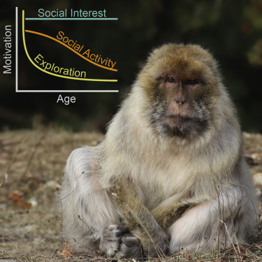
This is where Eliza—who knows a little something about monkeys—comes into frame: this did not gel with her experiences at all.
So Eliza (and Mark, who also knows a little something about monkeys) decided to look into it.
What are the stakes (According to the papers, not according to me, who knows exactly nothing about this type of work)
A big motivation for studying macaques and other non-human primates is that they’re good models of humans. This means that if there was solid evidence of macaques becoming less interested in novel stimuli as they age (while maintaining interest in people), this could suggest an evolutionary reason from this (commonly observed) behaviour in humans.
So if this result is true, it could help us understand the psychology of humans as they age (and in particular, the learned vs evolved trade off they are making).
So what did Eliza and Mark do?
There are a few things you can do when confronted with a result that contradicts your experience: you can complain about it on the Internet, you can mobilize a direct replication effort, or you can conduct your own experiments. Eliza and Mark opted for the third option, designing a conceptual replication.
Direct replications tell you more about the specific experiment that was conducted, but not necessarily more about the phenomenon under investigation. In a study involving aged monkeys, it’s difficult to imagine how a direct replication could take place.
On the other hand, a conceptual replication has a lot more flexibility. It allows you to probe the question in a more targeted manner, appropriate for incremental science. In this case, Eliza and Mark opted to study only the claim that the monkeys lose interest in novel stimuli as they age (paper here). They did not look into the social claim. They also used a slightly different species of macaque (M. mulatta rather than M. butterfly). This is reasonable insofar as understanding macaques as a model for human behaviour.
What does the data look like?
The experiment used 2431 monkeys aged between 4 and 30 and gave them a novel puzzle task (opening a fancy tube with food in it) for twenty minutes over two days. The puzzle was fitted with an activity tracker. Each monkey had two tries at the puzzle over two days. Monkeys had access to the puzzle for around2 20 minutes.
In order to match the original study’s analysis, Eliza and Mark divided the first two minutes into 15 second intervals and counted the number of intervals where the monkey interacted with the puzzle. They also measured the same thing over 20 minutes in order to see if there was a difference between short-term curiosity and more sustained exploration.
For each monkey, we have the following information:
- Monkey ID
- Age (4-30)
- Day (one or two)
- Number of active intervals in the first two minutes (0-8)
- Number of active intervals in the first twenty minutes (0-80)
The data and their analysis are freely3 available here.
Ok Mary, how do we analyze this data?
Eliza and Mark’s monkey data is an example of a fairly common type of experimental data, where the same subject is measured multiple times. It is useful to break the covariates down into three types: grouping variables, group-level covariates, and individual-level covariates.
Grouping variables indicate what group each observation is in. We will see a lot of different ways of defining groups as we go on, but a core idea is that observations within a group should conceptually more similar to each other than observations in different groups. For Eliza and Mark, their grouping variable is monkey. This encodes the idea that different monkeys might have very different levels of curiosity, but the same monkey across two different days would probably have fairly similar levels of curiosity.
Group-level covariates are covariates that describe a feature of the group rather than the observation. In this example, age is a group-level covariate, because the monkeys are the same age at each observation.
Individual-level covariates are covariates that describe a feature that is specific to an observation. (The nomenclature here can be a bit confusing: the “individual” refers to individual observations, not to individual monkeys. All good naming conventions go to shit eventually.) The individual-level covariate is experiment day. This can be a bit harder to see than the other designations, but it’s a little clearer if you think of it as an indicator of whether this is the first time the monkey has seen the task or the second time. Viewed this way, it is very clearly a measurement of an property of an observation rather than of a group.
Eliza and Mark’s monkey data is an example of a fairly general type of experimental data where subjects (our groups) are given the same task under different experimental conditions (described through individual-level covariates). As we will see, it’s not uncommon to have much more complex group definitions (that involve several grouping covariates) and larger sets of both group-level and individual-level covariates.
So how do we fit a model to this data.
There are just too many monkeys; or Why can’t we just analyse this with regression?
The temptation with this sort of data is to fit a linear regression to it as a first model. In this case, we are using grouping, group-level, and individual-level covariates in the same way. Let’s suck it and see.
library(broom)
fit_lm <- lm(active_bins ~ age*factor(day) + factor(monkey), data = activity_2mins)
tidy(fit_lm) So the first thing you will notice is that that is a lot of regression coefficients! There are 243 monkeys and 2 days, but only 485 observations. This isn’t enough data to reliably estimate all of these parameters. So what are we to do?
The problem is the monkeys. If we use monkey as a factor variable, we only have (at most) two observations of each factor level. This is simply not enough observations per to estimate the monkey-specific intercept!
This type of model is often described as having no pooling, which indicates that there is no explicit dependence between the intercepts for each group (monkey). (There is some dependence between groups due to the group-level covariate age.)
If we ignore the monkeys, will they go away? or another attempt at regression
Our first attempt at a regression model didn’t work particularly well, but that doesn’t mean we should give up. A second option is that we can assume that there is, fundamentally, no difference between monkeys. If all monkeys of the same age have similar amounts of interest in new puzzles, this would be a reasonable assumption. The best case scenario is that not accounting for differences between individual monkeys would still lead to approximately normal residuals, albeit with probably a larger residual variance.
This type of modelling assumption is called complete pooling as it pools the information between groups by treating them all as the same.
Let’s see what happens in this case!
Call:
lm(formula = active_bins ~ age * factor(day), data = activity_2mins)
Residuals:
Min 1Q Median 3Q Max
-4.5249 -1.5532 0.1415 1.6731 4.1884
Coefficients:
Estimate Std. Error t value Pr(>|t|)
(Intercept) 3.789718 0.344466 11.002 <2e-16 ***
age 0.003126 0.021696 0.144 0.885
factor(day)2 0.056112 0.488818 0.115 0.909
age:factor(day)2 0.025170 0.030759 0.818 0.414
---
Signif. codes: 0 '***' 0.001 '**' 0.01 '*' 0.05 '.' 0.1 ' ' 1
Residual standard error: 2.103 on 481 degrees of freedom
Multiple R-squared: 0.01365, Adjusted R-squared: 0.0075
F-statistic: 2.219 on 3 and 481 DF, p-value: 0.0851On the up side, the regression runs and doesn’t have too many parameters!
The brave and the bold might even try to interpret the coefficients and say something like there doesn’t seem to be a strong effect of age. But there’s real danger in trying to interpret regression coefficients in the presence of a potential confounder (in this case, the monkey ID). And it’s particularly bad form to do this without ever looking at any sort of regression diagnostics. Linear regression is not a magic eight ball.
Let’s look at the diagnostic plots.
library(broom)
augment(fit_lm_pool) %>%
ggplot(aes(x = .fitted, y = active_bins - .fitted)) +
geom_point() +
geom_smooth(method = "lm", se = FALSE) +
theme_classic()
augment(fit_lm_pool) %>% ggplot(aes(sample = .std.resid)) +
stat_qq() +
geom_abline(slope = 1, intercept = 0, linetype = "dashed") +
theme_classic()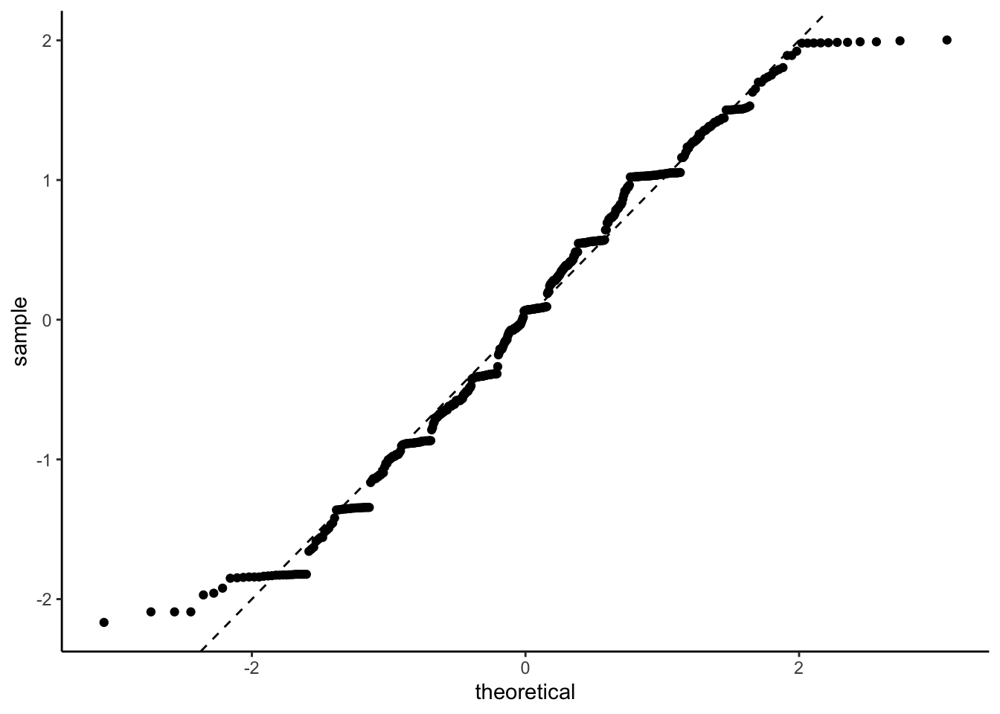
There are certainly some patterns in those residuals (and some suggestion that the error need a heavier tail for this model to make sense).
What is between no pooling and complete pooling?
We are in a Goldilocks situation: no pooling results in a model that has too many independent parameters for the amount of data that we’ve got, while complete pooling has too few parameters to correctly account for the differences between the monkeys. So what is our perfectly tempered porridge?
The answer is to assume that each monkey has its own intercept, but that it’s intercept can only be so far from the overall intercept (which we would’ve gotten from complete pooling). There are a bunch of ways to realize this concept, but the classical method is to use a normal distribution.
In particular, if the \(j\)th monkey has observations \(y_{ij}\), \(i=1,2\), then we can write our model as \[ y_{ij} \sim N(\mu_j + \beta_\text{age}\, \text{age}_j + \beta_\text{day}\, \text{day}_{ij}, \sigma^2). \] The effect of age (\(\beta\)) and the data standard deviation (\(\sigma\)) are just like they’d be in an ordinary linear regression model. Our modification comes in how we treat the \(\mu_j\).
In a classical linear regression model, we would fit the \(\mu_j\)s independently, perhaps with some weakly informative prior distribution. But we’ve already discussed that that won’t work.
Instead we will make the \(\mu_j\) exchangeable rather than independent. Exchangeability is a relaxation of the independence assumption to say instead encode that we have no idea which of the intercepts will do what. That is, if we switch around the labels of our intercepts the prior should not change. There is a long and storied history of exchangeable models in statistics, but the short version that is more than sufficient for our purposes is that they usually4 take the form \[\begin{align*} \mu_j \mid \tau \stackrel{\text{iid}}{\sim} &p(\mu_j \mid \tau), \qquad i = 1,\ldots, J \\ \tau \sim & p(\tau). \end{align*}\]
In a regression context, we typically assume that \[ \mu_j \mid \tau \sim N(\mu, \tau^2) \] for some \(\mu\) and \(\tau\) that will need their own priors.
Mathematically the difference the classical regression model that assumes independence of the \(\mu_j\) and this model is that the former assumes that we can write the joint distribution of the \(\mu_j\) as \[ p(\mu_1, \ldots, \mu_J) = \prod_{j=1}^J N(\mu, \tau_\text{fixed}^2) \] while the exchangeable model assumes that \[ p(\mu_1, \ldots, \mu_J) = \int_0^\infty \left(\prod_{j=1}^J N(\mu, \tau^2)\right)p(\tau)\,d\tau. \]
This might not seem like much of a change, but it can be quite profound. In both cases, the prior is saying that each \(\mu_j\) is, with high probability, at most \(3\tau\) away from the overall mean \(\mu\). The difference is that while the classical least squares formulation uses a fixed value of \(\tau\) that needs to be specified by the modeller, while the exchangeable model lets \(\tau\) adapt to the data.
This data adaptation is really nifty! It means that if the groups have similar means, they can borrow information from the other groups (via the narrowing of \(\tau\)) in order to improve their precision over an unpooled estimate. On the other hand, if there is a meaningful difference between the groups5, this model can still represent that, unlike the unpooled model.
In our context, however, we need a tiny bit more. We have a group-level covariate (specifically age) that we think is going to effect the group mean. So the model we want is \[\begin{align*}
y_{ij} \mid \mu_j, \sigma &\sim N(\mu_j, \sigma^2) \\
\mu_j\mid \tau, \mu,\beta &\sim N(\mu + \beta_\text{age}\, \text{age}_j + \beta_\text{day}\, \text{day}_{ij}, \tau^2) \\
\mu &\sim p(\mu)\\
\beta &\sim p(\beta)\\
\tau & \sim p(\tau) \\
\sigma &\sim p(\sigma).
\end{align*}\]
In order to fully specify the model we need to set the four prior distributions.
What are our prior distributions and how do we sense-check the assumptions
We need to set priors. The canny amongst you may have noticed that I did not set priors in the previous two examples. There are two reasons for this: firstly I didn’t feel like it, and secondly none but the most terrible prior distributions would have meaningfully changed the conclusions. This is, it turns out, one of the great truths when it comes to prior distributions: they do not matter until they do.
In particular, if you have a parameter that directly sees the data (eg it’s in the likelihood) and there is nothing weird going on6, then the prior distribution will usually not do much as any prior will be quickly overwhelmed by the data.
The problem is that we have one parameter in our model (\(\tau\)) that does not directly see the data. Instead of directly telling us about an observation, it tells us about how different the groups of observations are. There is usually less information in the data about this type of parameter and, consequently, the prior distribution will be more important.
So let’s pay some proper attention to the priors.
To begin with, let’s set priors on \(\mu\), \(\beta\), and \(\sigma\) (aka the data-level parameters). This is a considerably easier task if the data is scaled. Otherwise, you need to encode information about the usual scale7 of the data into your priors. Sometimes this is a sensible and easy thing to do, but usually it’s easier to simply scale the data. (A lot of software will simply scale your data for you, but it is always better to do it yourself!)
So let’s scale our data. We have 2 variables: age and active_bins. For age, we are going to want to measure it as either years from the youngest monkey or years from the average monkey. I think, in this situation, the first version could make a lot of sense, but we are going with the second. This allows us to interpret \(\mu\) as the over-all mean. Otherwise, \(\mu\) would tell us about the overall average activity of 4 year old monkeys and we will use \(\beta(\text{age}_j - 4)\) to estimate how much the activity changes, on average keeping all other aspects constant, as the monkey ages.
On the other hand, we have no sensible baseline for activity, so deviation from the average seems like a sensible scaling. I also don’t know, a priori, how variable activity is going to be, so I might want to scale8 it by its standard deviation. In this case, I’m not going to do that because we have a sensible fixed9 upper limit (8), which I can scale by.
One important thing here is that if we scale the data by data-dependent quantities (like the minimum, the mean, or the standard deviation) we must keep track of this information. This is because any future data we try to predict with this model will need to be transformed the same way! This particularly has implication when you are doing things like test/training set validation or cross validation: in the first case, the test set needs to be scaled in the same way the training set was; while in the second case each cross validation training set needs to be scaled independently and that scaling needs to be used on the corresponding left-out data10.
age_centre <- mean(activity_2mins$age)
age_scale <- diff(range(activity_2mins$age))/2
active_bins_centre <- 4
activity_2mins_scaled <- activity_2mins |>
mutate(monkey = factor(monkey),
day = factor(day),
age_centred = (age - age_centre)/age_scale,
active_bins_scaled = (active_bins - active_bins_centre)/4,
active_bins_sqrt = sqrt(active_bins))With our scaling completed, we can now start thinking about prior distributions. The trick with priors is to make them wide enough to cover all plausible values of a parameter without making them so wide that they put a whole bunch of weight on essentially silly values.
We know, for instance, that our unscaled activity will go between 0 and 8. That means that it’s unlikely for the mean of the scaled process to be much bigger than 4, and it’s unlikely for the rate of change with respect to age to be much bigger than to be much bigger than 1 (macaques live for 20-40 years). These considerations suggest that \(N(0,1)\) priors should be appropriate for \(\mu\). As we normalised our age data relative to the smallest age, we should think more carefully about the scaling of \(\beta\). Macaques live for 20-30 years, so we need to think about, for instance, an ordinary aged macaque that would be 15 years older than the baseline. Thanks to our scaling, the largest change that we can have is 1, which strongly suggests that if \(\beta\) was too much larger than \(0.1\) we are going to be in unreasonable territory. So let’s put a \(N(0,0.1^2)\) prior on \(\beta_\text{age}\). For \(\beta_\text{day}\) we can use a \(N(0,1)\) prior. Similarly, the scaling of activity_bins suggests that a \(N(0,1)\) prior would be sufficient for the data-level standard deviation \(\sigma\).
That just leaves us with our choice of prior for the standard deviation of the intercept11 \(\mu_j\), \(\tau\). Thankfully, we considered this case in detail in the previous blog post. There I argued that a sensible prior for \(\tau\) would be an exponential prior. To be quite honest with you, a half-normal or a half-t also would be fine. But I’m going to stick to my guns. For the scaling, again, it would be a touch surprising (given the scaling of the data) if the group means were more than 3 apart, so choosing \(\lambda=1\) in the exponential distribution should give a relatively weak prior without being so wide that we are putting prior mass on a bunch of values that we would never actually want to put prior mass on.
We can then fit the model with brms. In this case, I’m using the cmdstanr back end, because it’s fast and I like it.
To specify the model, we use lme4-style notation
The first bit of this formula is the same as the formula used in linear regression. The interesting bit is is the (1 | monkey). This is the way to tell R that the intercept (aka 1 in formula notation) is going to be grouped by monkey and we are going to put an exchangeable normal prior on it. For more complex models there are more complex variations on this theme, but for the moment we won’t go any further.
To set the priors, we will use brms. Now, if you are Paul you might be able to remember how to set priors in brms without having to look it up, but I am sadly not Paul12, so every time I need to set priors in brms I write the formula and use the convenient get_prior function
From this, we can see that the default prior on \(\beta\) is an improper flat prior, the default prior on the intercept is a Student-t with 3 degrees of freedom centred at zero with standard deviation 2.5. The same prior (restricted to positive numbers) is put on all of the standard deviation parameters. These default prior distributions are, to be honest, probably fine in this context13, but it is good practice to always set your prior.
Pre-experiment prophylaxis
So we have specified some priors using the power of our thoughts. But we should probably check to see if they are broadly sensible. A great thing about Bayesian modelling is that we are explicitly specifying our a priori (or pre-data) assumptions about the data generating process. That means that we can do a fast validation of our priors by simulating from them and checking that they’re not too wild.
There are lots of ways to do this, but the easiest14 way to do this is to use the sample_prior = "only" option in the brm() function.
prior_draws <- brm(formula,
data = activity_2mins_scaled,
prior = priors,
sample_prior = "only",
backend = "cmdstanr",
cores = 4,
refresh = 0)Start samplingRunning MCMC with 4 parallel chains...
Chain 1 finished in 0.5 seconds.
Chain 2 finished in 0.5 seconds.
Chain 3 finished in 0.5 seconds.
Chain 4 finished in 0.5 seconds.
All 4 chains finished successfully.
Mean chain execution time: 0.5 seconds.
Total execution time: 0.8 seconds.Now that we have samples from the prior distribution, we can assemble them to work out what our prior tells us we would, pre-data, predict for the number of active bins for a single monkey (in this a single monkey15 that is 10 years older than the baseline).
pred_data <- data.frame(age_centred = 10, day = 1, monkey = "88")
tibble(pred = brms::posterior_predict(prior_draws,
newdata = pred_data )) |>
ggplot(aes(pred)) +
geom_histogram(aes(y = after_stat(density)), fill = "lightgrey") +
geom_vline(xintercept = -1, linetype = "dashed") +
geom_vline(xintercept = 1, linetype = "dashed") +
xlim(c(-20,20)) +
theme_bw()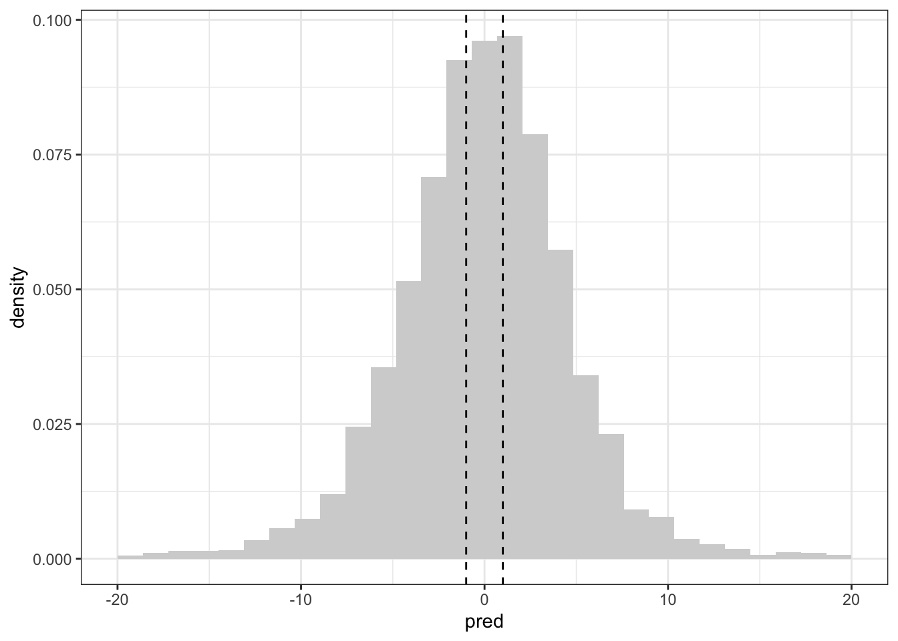
The vertical lines are (approximately) the minimum and maximum of the data. This16 suggests that the implied priors are definitely wider than our observed data, but they are not several orders of magnitude too wide. This is a good situation to be in: it gives enough room in the priors that we might be wrong with our specification while also not allowing for truly wild values of the parameters (and implied predictive distribution). One could even go so far as to say that the prior is weakly informative.
Let’s compare this to the default priors on the standard deviation parameters. (The default priors on the regression parameters are improper so we can’t simulate from them. So I replaced the improper prior with a much narrower \(N(0,10^2)\) prior. If you make the prior on the \(\beta\) wider the prior predictive distribution also gets wider.)
priors_default <- prior(normal(0,10), class = "b")
prior_draws_default <- brm(formula,
data = activity_2mins_scaled,
prior = priors_default,
sample_prior = "only",
backend = "cmdstanr",
cores = 4,
refresh = 0)Running MCMC with 4 parallel chains...
Chain 1 finished in 0.5 seconds.
Chain 2 finished in 0.5 seconds.
Chain 3 finished in 0.5 seconds.
Chain 4 finished in 0.5 seconds.
All 4 chains finished successfully.
Mean chain execution time: 0.5 seconds.
Total execution time: 0.7 seconds.tibble(pred = brms::posterior_predict(prior_draws_default,
newdata = pred_data )) |>
ggplot(aes(pred)) +
geom_histogram(aes(y = after_stat(density)), fill = "lightgrey") +
geom_vline(xintercept = -1, linetype = "dashed") +
geom_vline(xintercept = 1, linetype = "dashed") +
theme_bw()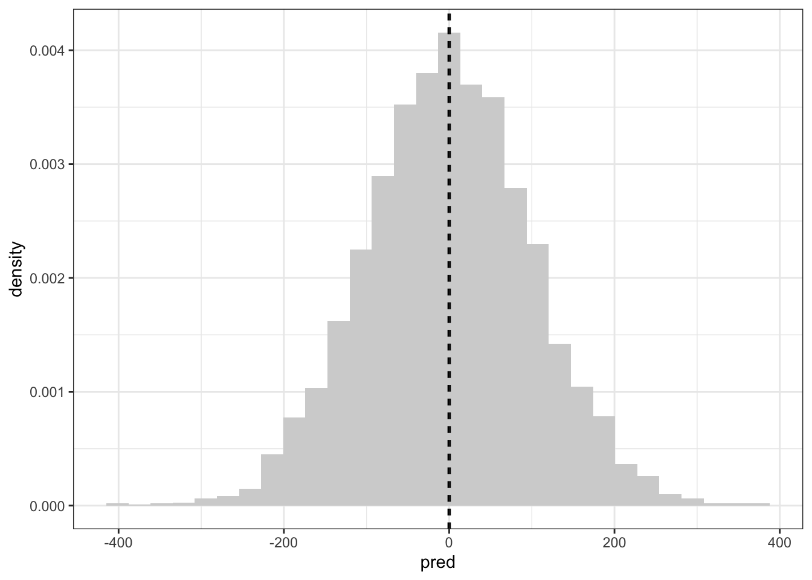
This is considerably wider.
Fitting the data; or do my monkeys get less interesting as they age
With all of that in hand, we can now fit the data. Hooray. This is done with the same command (minus the sample_prior bit).
posterior_draws <- brm(formula,
data = activity_2mins_scaled,
prior = priors,
backend = "cmdstanr",
cores = 4,
refresh = 0)Start samplingRunning MCMC with 4 parallel chains...
Chain 1 finished in 1.6 seconds.
Chain 2 finished in 1.6 seconds.
Chain 3 finished in 1.6 seconds.
Chain 4 finished in 1.6 seconds.
All 4 chains finished successfully.
Mean chain execution time: 1.6 seconds.
Total execution time: 1.7 seconds. Family: gaussian
Links: mu = identity; sigma = identity
Formula: active_bins_scaled ~ age_centred * day + (1 | monkey)
Data: activity_2mins_scaled (Number of observations: 485)
Draws: 4 chains, each with iter = 2000; warmup = 1000; thin = 1;
total post-warmup draws = 4000
Group-Level Effects:
~monkey (Number of levels: 243)
Estimate Est.Error l-95% CI u-95% CI Rhat Bulk_ESS Tail_ESS
sd(Intercept) 0.31 0.03 0.24 0.37 1.00 1152 2164
Population-Level Effects:
Estimate Est.Error l-95% CI u-95% CI Rhat Bulk_ESS Tail_ESS
Intercept -0.04 0.03 -0.10 0.03 1.00 4648 3134
age_centred 0.01 0.07 -0.11 0.14 1.00 3566 3034
day2 0.10 0.04 0.03 0.18 1.00 8007 2416
age_centred:day2 0.07 0.08 -0.07 0.22 1.00 6341 2627
Family Specific Parameters:
Estimate Est.Error l-95% CI u-95% CI Rhat Bulk_ESS Tail_ESS
sigma 0.43 0.02 0.39 0.47 1.00 1417 2856
Draws were sampled using sample(hmc). For each parameter, Bulk_ESS
and Tail_ESS are effective sample size measures, and Rhat is the potential
scale reduction factor on split chains (at convergence, Rhat = 1).There doesn’t seem to be much of an effect of age in this data.
If you’re curious, this matches well17 with the output of lme4, which is a nice sense check for simple models. Generally speaking, if they’re the same then they’re both fine. If they are different18, then you’ve got to look deeper.
Linear mixed model fit by REML ['lmerMod']
Formula: active_bins_scaled ~ age_centred * day + (1 | monkey)
Data: activity_2mins_scaled
REML criterion at convergence: 734.9096
Random effects:
Groups Name Std.Dev.
monkey (Intercept) 0.3091
Residual 0.4253
Number of obs: 485, groups: monkey, 243
Fixed Effects:
(Intercept) age_centred day2 age_centred:day2
-0.04114 0.01016 0.10507 0.08507 Post experiment prophylaxis
Of course, we would be fools to just assume that because we fit a model the model is a good representation of the data. To do that, we need to look at some posterior checks.
The easiest thing to look at is the predictions themselves.
fitted <- activity_2mins_scaled |>
cbind(t(posterior_predict(posterior_draws,ndraws = 200))) |>
pivot_longer(8:207, names_to = "draw", values_to = "fitted")
day_labs <- c("Day 1", "Day 2")
names(day_labs) <- c("1", "2")
violin_plot <- fitted |>
ggplot(aes( x=age, y = 4*fitted + active_bins_centre, group = age)) +
geom_violin(colour = "lightgrey") +
geom_point(aes(y = active_bins), colour = "red") +
facet_wrap(~day, labeller = labeller(day = day_labs)) +
theme_bw()
violin_plot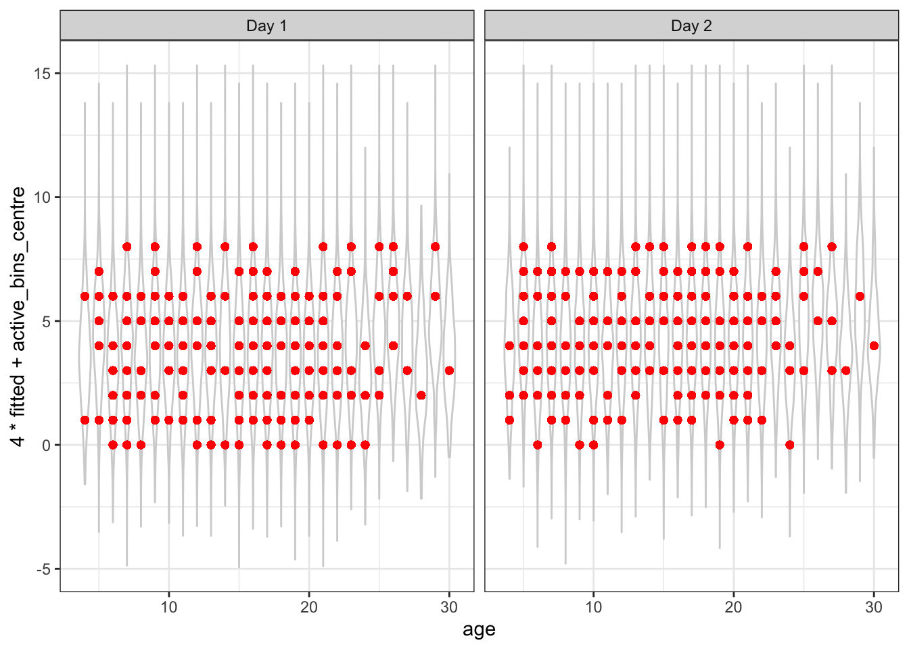
That appears to be a reasonably good fit, although it’s possible that the prediction intervals are a bit wide. We can also look at the plot of the posterior residuals vs the fitted values. Here the fitted values are the mean of the posterior predictive distribution.
Next, let’s check for evidence of non-linearity in age.
plot_data <- activity_2mins_scaled |>
mutate(fitted_mean = colMeans(posterior_epred(posterior_draws,ndraws = 200)))
age_plot <- plot_data |>
ggplot(aes(x = age, y = active_bins_scaled - fitted_mean)) +
geom_point() +
theme_bw()
age_plot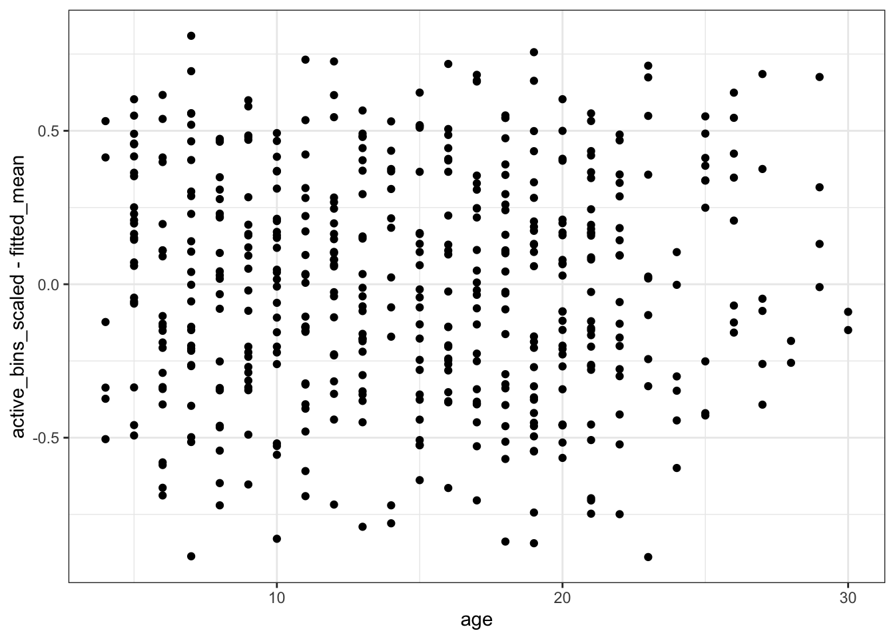
There doesn’t seem to be any obvious evidence of non-linearity in the residuals, which suggests the linear model for age was sufficient.
We can also check the distributional assumption19 that the residuals \[ r_{ij} = y_{ij} - \mu_j \] have a Gaussian distribution. We can check this with a qq-plot. Here we are using the posterior mean to define our residuals.
We can look at the qq-plot to see how we’re doing with normality.
distribution_plot <- plot_data %>% ggplot(aes(sample = (active_bins_scaled - fitted_mean)/sd(active_bins_scaled - fitted_mean))) +
stat_qq() +
geom_abline(slope = 1, intercept = 0, linetype = "dashed") +
theme_classic()
distribution_plot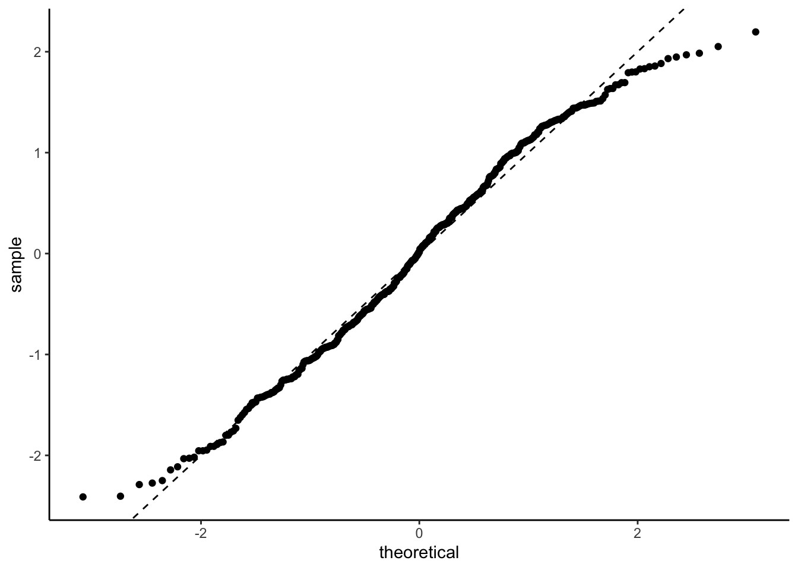
That’s not too bad. A bit of a deviation from normality in the tails but nothing that would make me weep. It could well be an artifact of how I defined and normalised the residuals.
We can also look at the so-called k-hat plot, which can be useful for finding high-leverage observations in general models.
Warning: Found 3 observations with a pareto_k > 0.7 in model 'posterior_draws'.
It is recommended to set 'moment_match = TRUE' in order to perform moment
matching for problematic observations.
Computed from 4000 by 485 log-likelihood matrix
Estimate SE
elpd_loo -349.6 12.3
p_loo 117.7 5.1
looic 699.2 24.7
------
Monte Carlo SE of elpd_loo is NA.
Pareto k diagnostic values:
Count Pct. Min. n_eff
(-Inf, 0.5] (good) 417 86.0% 490
(0.5, 0.7] (ok) 65 13.4% 517
(0.7, 1] (bad) 3 0.6% 403
(1, Inf) (very bad) 0 0.0% <NA>
See help('pareto-k-diagnostic') for details.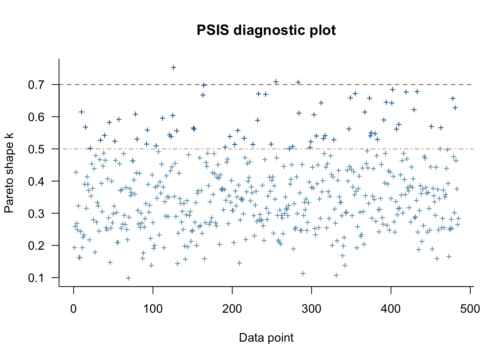
This suggests that observations 126, 255, 283 are potentially high leverage and we should check them more carefully. I won’t be doing that today.
Finally, let’s look at the residuals vs the fitted values. This is a commonly used diagnostic plot in linear regression and it can be very useful for visually detecting non-linear patterns and heteroskedasticity in the residuals. So let’s make the plot20.
problem_plot <- plot_data |>
ggplot(aes(x = fitted_mean, y = active_bins_scaled - fitted_mean)) +
geom_point() +
geom_smooth(method = "lm", se = FALSE, linetype = "dashed", colour = "blue")+
facet_wrap(~day) +
theme_bw() + theme(legend.position="none") +
xlim(c(-1,1)) +
ylim(c(-1,1))
problem_plot`geom_smooth()` using formula 'y ~ x'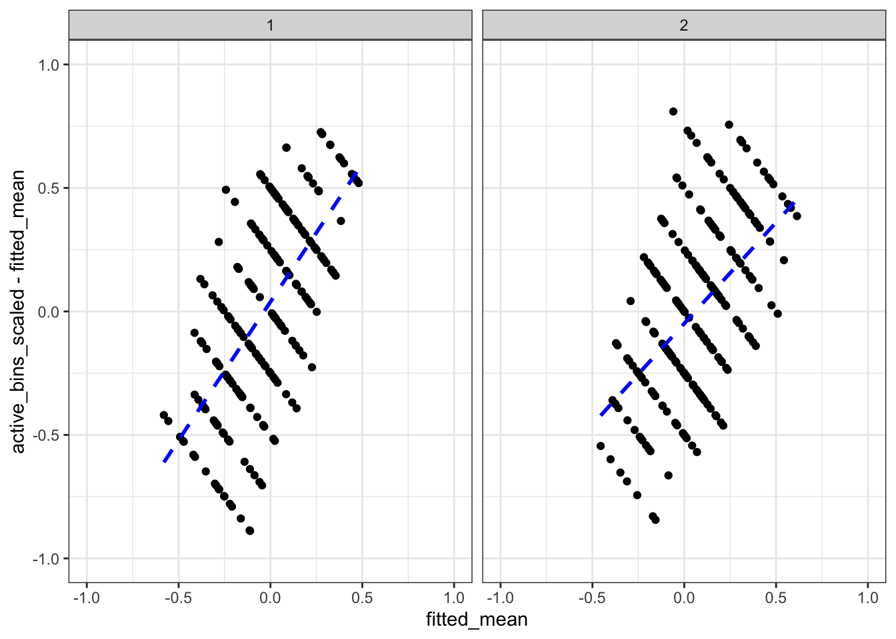
Hmmmm. That’s not excellent. The stripes are related to the 8 distinct values the response can take, but there is definitely a trend in the residuals. In particular, we are under-predicting small values and over-predicting large values. There is something here and we will look into it!
Understanding diagnostic plots from multilevel models
The thing is, multilevel models are notorious for having patterns that are essentially a product of the data design and not of any type of statistical misspecification. In a really great paper that you should all read, Adam Loy, Heike Hofmann, and Di Cook talk extensively about the challenges with interpreting diagnostic plots for linear mixed effects models21.
I’m not going to fully follow their recommendations, mostly because I’m too lazy22 to write a for loop, but I am going to appropriate the guts of their idea.
They note that strange patterns can occur in diagnostic plots even for correctly specified models. Moreover, we simply do not know what these patters will be. It’s too complex a function of the design, the structure, the data, and the potential misspecification. That sounds bad, but they note that we don’t need to know what pattern to expect. Why not? Because we can simulate it!
So this is the idea: Let’s simulate some fake23 data from a correctly specified model that otherwise matches with our data. We can then compare the diagnostic plots from the fake data with diagnostic plots from the real data and see if the patterns are meaningfully different.
In order to do this, we should have a method to construct multiple fake data sets. Why? Well a plot is nothing but another test statistic and we must take this variability into account.
(That said, do what I say, not what I do. This is a blog. I’m not going to code well enough to make this clean and straightforward, so I’m just going to do one.)
There is an entire theory of visual inference that uses these lineups of diagnostic plots, where one uses the real data and the rest use realisations of the null data, that is really quite interesting and well beyond the scope of this post. But if you want to know more, read the Low, Hoffman, and Cook paper!
Making new data
The first thing that we need to do is to work out how to simulate fake data from a correctly specified model with the same structure. Following the Low etc paper, I’m going to do a simple parameteric bootstrap, where I take the posterior medians of the fitted distribution and simulate data from them.
That said, there are a bunch of other options. Specifically, we have a whole bag of samples from our posterior distribution and it would be possible to use that to select values of24 \((\mu, \beta, \tau, \sigma)\) for our simulation.
So let’s make some fake data and fit the model to it!
monkey_effect <- tibble(monkey = unique(activity_2mins_scaled$monkey),
monkey_effect = rnorm(243,0,0.31))
data_fake <- activity_2mins_scaled |>
left_join(monkey_effect, by = "monkey") |>
mutate(active_bins_scaled = rnorm(length(age_centred),
mean = -0.04 +0.01 * age_centred +
monkey_effect + if_else(day == "2", 0.1 + 0.085 *age_centred, 0.0),
sd = 0.43))
posterior_draws_fake <- brm(formula,
data = data_fake,
prior = priors,
backend = "cmdstanr",
cores = 4,
refresh = 0)Running MCMC with 4 parallel chains...
Chain 1 finished in 1.3 seconds.
Chain 2 finished in 1.3 seconds.
Chain 3 finished in 1.3 seconds.
Chain 4 finished in 1.3 seconds.
All 4 chains finished successfully.
Mean chain execution time: 1.3 seconds.
Total execution time: 1.5 seconds.The good plots
First up, let’s look at the violin plot.
library(cowplot)
fitted_fake <- data_fake |>
cbind(t(posterior_predict(posterior_draws_fake,ndraws = 200))) |>
pivot_longer(8:207, names_to = "draw", values_to = "fitted")
day_labs <- c("Day 1", "Day 2")
names(day_labs) <- c("1", "2")
violin_fake <- fitted_fake |>
ggplot(aes( x=age, y = 4*fitted + active_bins_centre, group = age)) +
geom_violin(colour = "lightgrey") +
geom_point(aes(y = active_bins), colour = "red") +
facet_wrap(~day, labeller = labeller(day = day_labs)) +
theme_bw()
plot_grid(violin_plot, violin_fake, labels = c("Real", "Fake"))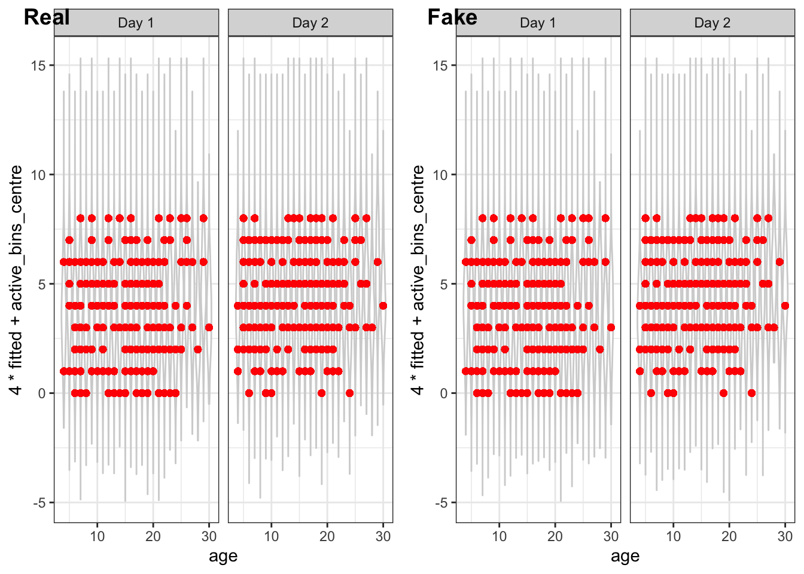
That’s very similar to our data plot.
Next up, we will look at the residuals ordered by age
plot_data_fake <- data_fake |>
mutate(fitted_mean = colMeans(posterior_epred(posterior_draws_fake,ndraws = 200)))
age_fake <- plot_data_fake |>
ggplot(aes(x = age, y = active_bins_scaled - fitted_mean)) +
geom_point() +
theme_bw()
plot_grid(age_plot, age_fake, labels = c("Real", "Fake"))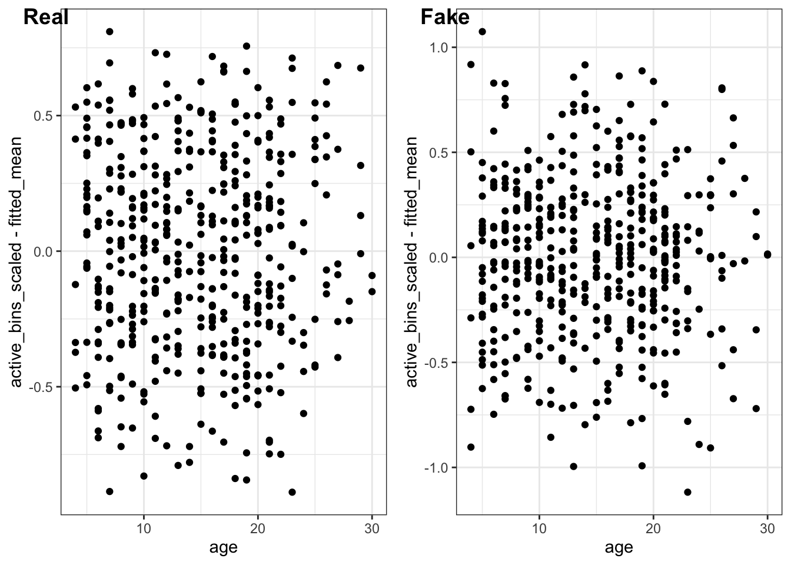
Fabulous!
Now let’s check the distributional assumption on the residuals!
distribution_fake <- plot_data_fake |>
ggplot(aes(sample = (active_bins_scaled - fitted_mean)/sd(active_bins_scaled - fitted_mean))) +
stat_qq() +
geom_abline(slope = 1, intercept = 0, linetype = "dashed") +
theme_classic()
plot_grid(distribution_plot, distribution_fake, labels = c("Real", "Fake"))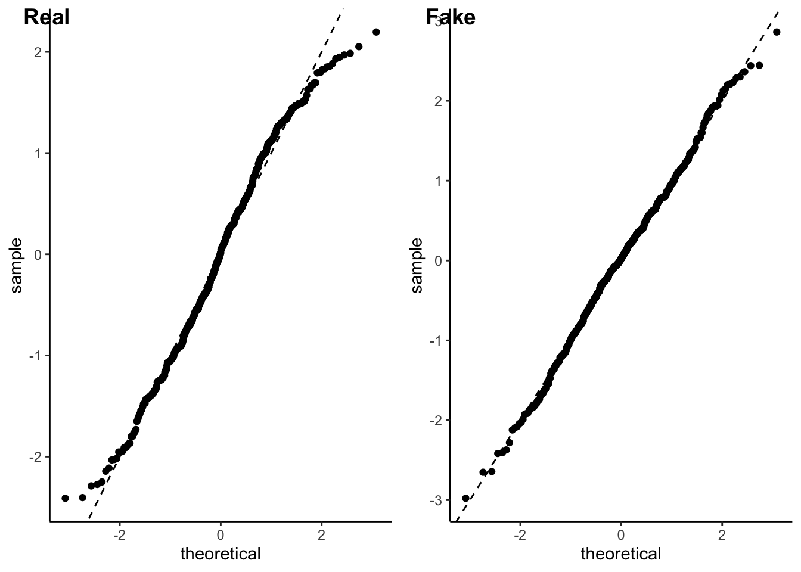
Excellent!
Finally, we can look at the k-hat plot. Because I’m lazy, I’m not going to put them side by side. You can scroll.
Warning: Found 7 observations with a pareto_k > 0.7 in model
'posterior_draws_fake'. It is recommended to set 'moment_match = TRUE' in order
to perform moment matching for problematic observations.
Computed from 4000 by 485 log-likelihood matrix
Estimate SE
elpd_loo -354.8 15.4
p_loo 114.3 6.2
looic 709.5 30.8
------
Monte Carlo SE of elpd_loo is NA.
Pareto k diagnostic values:
Count Pct. Min. n_eff
(-Inf, 0.5] (good) 412 84.9% 804
(0.5, 0.7] (ok) 66 13.6% 259
(0.7, 1] (bad) 7 1.4% 168
(1, Inf) (very bad) 0 0.0% <NA>
See help('pareto-k-diagnostic') for details.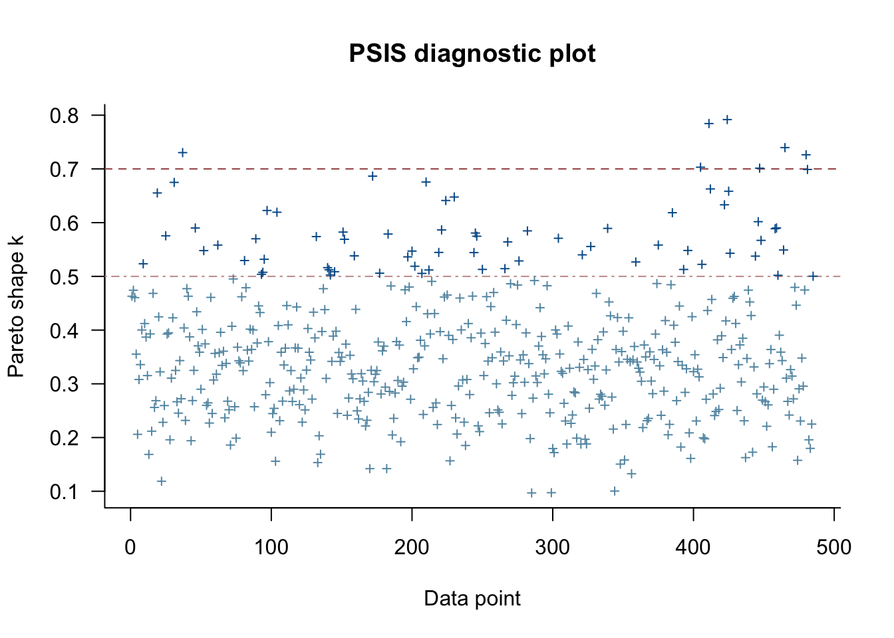
And look: we get some extreme values. (Depending on the run we get more or less). This suggests that while it would be useful to look at the data points flagged by the k-hat statistic, it may just be sampling variation.
The haunted residual vs fitted plot
Now let’s look at our residual vs fitted plot.
problem_fake <- plot_data_fake |>
ggplot(aes(x = fitted_mean, y = active_bins_scaled - fitted_mean)) +
geom_point() +
geom_smooth(method = "lm", se = FALSE, linetype = "dashed", colour = "blue")+
facet_wrap(~day) +
theme_bw() + theme(legend.position="none") +
xlim(c(-1,1)) +
ylim(c(-1,1))
plot_grid(problem_plot, problem_fake, labels = c("Real", "Fake"))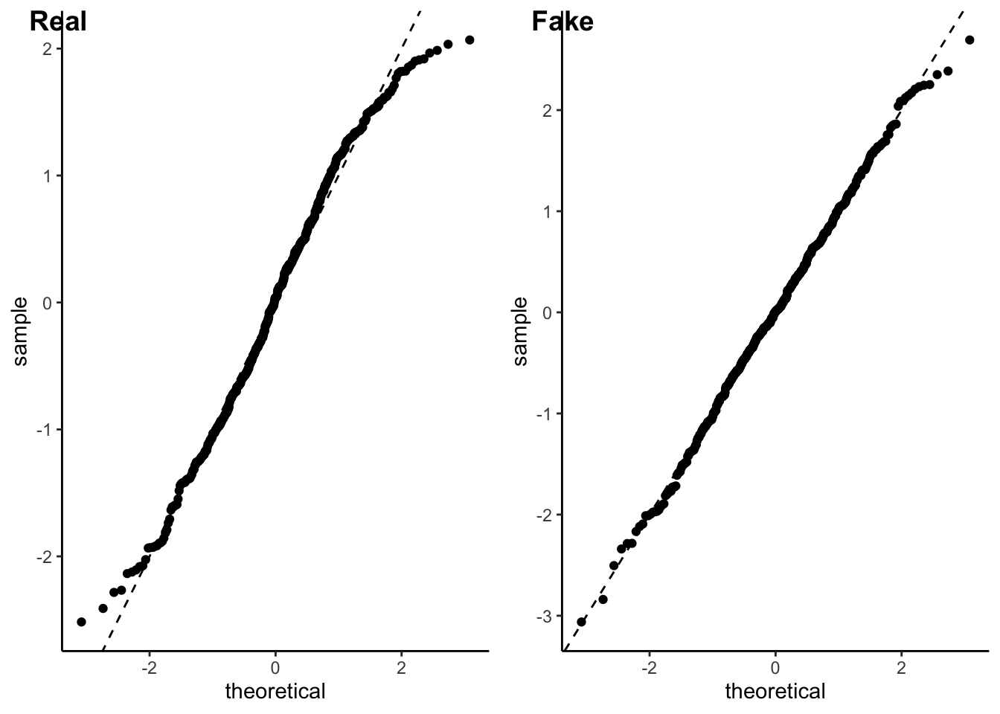
And what do you know! They look the same. (Well, minus the discretisation artefacts.)
So what the hell is going on?
Great question! It turns out that this is one of those cases where our intuition from linear models does not transfer over to multilevel models.
We can actually reason this out by thinking about a model where we have no covariates.
If we have no pooling then the observations for every monkey are, essentially, averaged to get our estimate of \(\mu_j\). If we repeat this, we will find that our \(\mu_j\) are basically25 unbiased and the corresponding residual \[ r_{ij} = y_{ij} - \mu_j \] will have mean zero.
But that’s not what happens when we have partial pooling. When we have partial pooling we are combining our naive average26 \(\bar y_j\) with the global average \(\mu\) in a way that accounts for the size of group \(j\) relative to other groups as well as the within-group variability relative to the between-group variability.
Expand for maths. Just a little
There is, in fact, a formula for it. Just in case you’re a formula sort of person. The posterior estimate for a Gaussian multilevel model with an intercept but no covariates is \[ \frac{1}{1 +\frac{\sigma^2/n}{\tau^2}}\left(\bar{y}_j + \frac{\sigma^2/n}{\tau^2} \mu\right). \] When \(\sigma/\sqrt{n}\) is small, which happens when the sampling standard deviation of \(\bar y_j\) is small relative to the between group variation \(\tau\), this is almost equal to \(\bar{y}_j\) and there is almost no pooling. On the other hand, when \(\sigma/\sqrt{n}\) is large relative to \(\tau\), then the estimate of \(\mu_j\) will be very close to the overall mean \(\mu\).The short version is that there is some magical number \(\alpha\), which depends on \(\tau\), \(\sigma\), and \(n_j\) such that \[ \hat \mu_j = \alpha \bar{y}_j + (1-\alpha) \mu. \] Because of this, the residuals \[ r_{ij} = y_j - \alpha \bar{y_j} - (1-\alpha)\mu \] are suddenly not going to have mean zero.
In fact, if we think about it a bit more, we will realise that the model will drag extreme groups to the centre, which accounts for the positive slope in the residuals vs the fitted values.
The slope in this example is quite extreme because the groups are very small (only one or two individuals). But it is a general phenomenon and it’s discussed extensively in Chapter 7 of Jim Hodges’ excellent book. His suggestion is that there isn’t really a good, general way to remove the trend. But that doesn’t mean the plot is useless. It is still able to pinpoint outliers and heteroskedasticity. You’ve just got to tilt your head.
But for the purposes of today we can notice that there don’t seem to be any extreme outliers so everything is probably ok.
Conclusion
So what have we done? Well we’ve gone through the process of fitting and scruitinising a simple Bayesian multilevel model. We’ve talked about some of the challenges associated with graphical diagnostics for structured data. And we’ve all27 learnt something about the residual-vs-fitted plot for a multilevel model.
And most importantly, we’ve all learnt the value of using fake data simulated from the posterior model to help us understand our diagnostics.
There is more to the scientific story here. It turns out that while there is no effect over 2 minutes, there is a slight effect over 20 minutes. So the conceptual replication failed, but still found some interesting things.
Of course, I’ve ignored one big elephant in the room: That data was discrete. In the end, our distributional diagnostics didn’t throw up any massive red flags, but nevertheless it could be an interesting exercise to see what happens if we use a more problem-adapted likelihood.
Last, and certainly not least, I barely scratched the surface of the Loy, Hoffman, and Cook paper. Anyone who is interested in fitting Gaussian multilevel models should definitely give it a read.
Footnotes
Actually 244, but one of them turned out to be blind. Animal research is a journey.↩︎
It turns out that some of the monkeys didn’t want to give up the puzzle after 20 minutes. One held out for 72 minutes before the data collection ended. Cheeky monkeys.↩︎
Did Mark make me do unspeakable, degrading, borderline immoral things to get the data? No. It’s open source. Truly the first time I’ve been disappoined that something was open source.↩︎
They always take this form if there is a countable collection of exchangeable random variables. For a finite set there are a few more options. But no one talks about those.↩︎
monkeys↩︎
A non-exhaustive set of weird things: categorical regressors with a rare category, tail parameters, mixture models↩︎
There are situations where this is not true. For instance if you have a log or logit link function you can put reasonable bounds on your coefficients regardless of the scaling of your data. That said, the computational procedures always appreciate a bit of scaling. If there’s one thing that computers hate more that big numbers it’s small numbers.↩︎
Of course, we know that the there are only 8 fifteen second intervals in two minutes, so we could use this information to make a data-independent scaling. To be brutally francis with you, that’s what you should probably do in this situation, but I’m trying to be pedagogical so let’s scale it by the standard deviation.↩︎
Fixed scaling is always easier than data-dependent scaling↩︎
The
tidymodelspackage in R is a great example of an ecosystem that does this properly. Max and Julia’s book is very excellent and well worth a read.↩︎In some places, we would call this a random effect.↩︎
He is very lovely. Many people would prefer that I was him.↩︎
It’s possible the the prior on \(\tau\) might be too wide. If we were doing a logistic regression, these priors would definitely be too wide. And if we had a lot of different random terms (eg if we had lots of different species or lots of different labs) then they would also probably be too wide. But they are better than not having priors.↩︎
Not the most computationally efficient, but the easiest. Also because it’s the same code we will later use to fit the model, we are evaluating the priors that are actually used and not the ones that we think we’re using.↩︎
It’s number 88, but because our prior is exchangeable it does not matter which monkey we do this for!↩︎
I also checked different values of
ageas well as looking at the posterior mean (viaposterior_epred) and the conclusions stay the same.↩︎The numbers will never be exactly equal, but they are of similar orders of magnitude.↩︎
Or if you get some sort of error or warning from
lme4↩︎So there’s a wrinkle here. Technically, all of the residuals have different variances, which is annoying. You typically studentise them using the leverage scores, but this is a touch trickier for multilevel models. Chapter 7 of Jim Hodges’s excellent book contains a really good discussion.↩︎
Once again, we are not studentizing the residuals. I’m sorry.↩︎
Another name for a multilevel model with a Gaussian response↩︎
Also because all of my data plots are gonna be stripey as hell, and that kinda destroys the point of visual inference.↩︎
They call it null data.↩︎
Note that I am not using values of \(\mu_j\)! I will simulate those from the normal distribution to ensure correct model specification. For the same reason, I am not using a residual bootstrap. The aim here is not to assess uncertainty so much as it is to ↩︎
This is a bit more complex when you’re Bayesian, but the intuition still holds. The difference is that now it is asymptotic↩︎
This is the average of all observations in group j. \[ \bar y_j = \frac{1}{n_j} \sum_{i=1}^{n_j} y_{ij}. \]↩︎
I mean, some of us knew this. Personally, I only remembered after I saw it and swore a bit.↩︎
Reuse
Citation
BibTeX citation:
@online{simpson2022,
author = {Dan Simpson},
editor = {},
title = {A First Look at Multilevel Regression; or {Everybody’s} Got
Something to Hide Except Me and My Macaques},
date = {2022-09-06},
url = {https://dansblog.netlify.app/2022-09-04-everybodys-got-something-to-hide-except-me-and-my-monkey.html},
langid = {en}
}
For attribution, please cite this work as:
Dan Simpson. 2022. “A First Look at Multilevel Regression; or
Everybody’s Got Something to Hide Except Me and My Macaques.”
September 6, 2022. https://dansblog.netlify.app/2022-09-04-everybodys-got-something-to-hide-except-me-and-my-monkey.html.